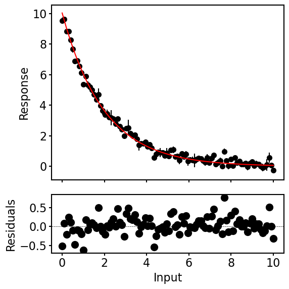
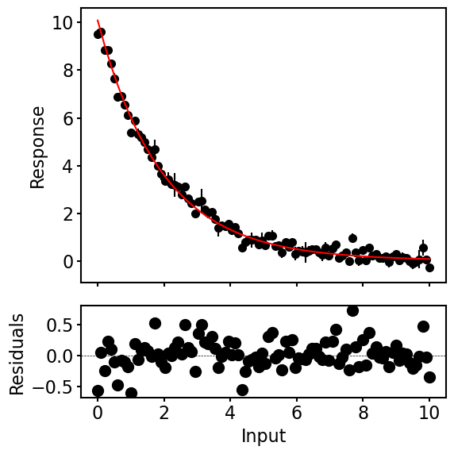
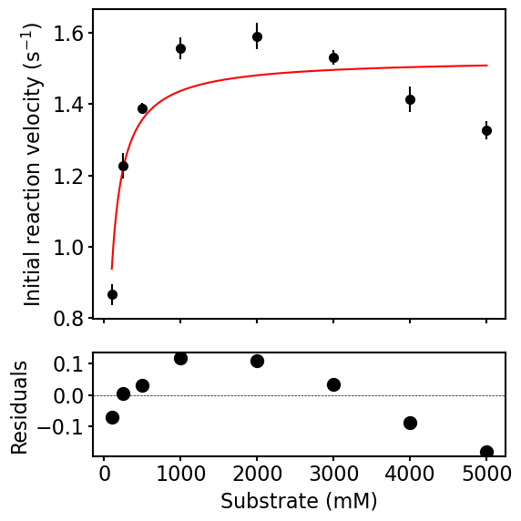
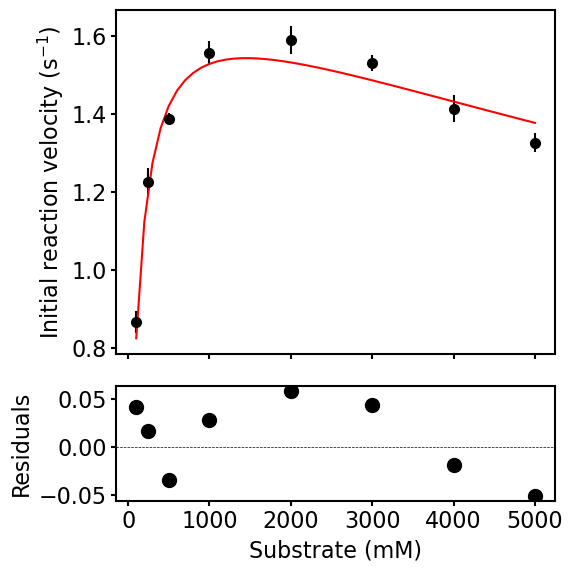

21. Nonlinear Regression
This session covers nonlinear regression: fitting models such as exponential decay and Michaelis–Menten with scipy.optimize.curve_fit, and choosing between competing models.
Non-Linearity: living outside the straight and narrow
Many phenomena in science follow non-linear relationships. Forcing a linear model onto non-linear data produces incorrect parameter estimates, poor residuals, and unreliable predictions.
Examples of non-linear behavior:
- Exponential decay (radioactive decay, first-order reaction kinetics)
- Single exponential example: \[y = A\,e^{-k x}\]
- Michaelis-Menten enzyme kinetics (saturation curve)
- \[v = \frac{V_{\max}\,[S]}{K_m + [S]}\]
- pH responses and sigmoidal transitions
- Henderson–Hasselbalch: \[f = \frac{1}{1 + 10^{(\mathrm{p}K_a - \mathrm{pH})}}\]
- Non-ohmic material behavior
- Power law: \[I = a\,V^{\,b}\]
Nonlinear vs. Linear Regression
| Aspect | Linear regression | Nonlinear regression |
|---|---|---|
| Model equation | Known: y = \(\beta_0\) + \(\beta_1\)x + … | Problem-specific: requires domain knowledge |
| Assumptions | Normality, homoscedasticity, independence, linearity | Independence, homoscedasticity |
| Parameter estimation | Analytic (ordinary least squares, OLS) | Numerical optimization; sensitive to starting values |
| Goodness of fit | \(R^2\) is appropriate | \(R^2\) is not appropriate; use RMSE or MAE |
| Common pitfalls | Underfitting with too few predictors | Convergence failure; overfitting; model selection difficulty |
\(R^2\) is defined relative to the mean-prediction baseline. For linear models, this baseline is meaningful because the least-squares fit always outperforms predicting the mean. For nonlinear models, this guarantee does not hold: the optimization may produce predictions that are worse than the baseline of predicting the mean. In that case \(R^2\) can be negative, which is mathematically valid but creates an unbounded \(R^2\). Thus, comparing \(R^2\) values between different nonlinear models is not straightforward. For non-linear models, RMSE and MAE are preferred because they are interpretable in the original units of the data and are comparable across models.
Model Selection with Nonlinear Regression
The same model comparison tools from the previous session: F-test (for nested models), AIC, and BIC.
A real example with exponential kinetics:
Are reaction kinetics data best described by a single- or double-exponential function? Below I am illustrating the same data fit to a single (top) or double (bottom) exponential function. From the plots, how could we decide on the best model?


F-test p-value: 0.499 → fail to reject \(H_0\) (the simpler model fits at least as well as the complex one). Therefore, the F-test suggests that you should select the single-exponential model.
A second example with enzyme kinetics:
Are the data better described by a standard Michaelis-Menten model (top) or an inhibitory model (bottom)?


F-test p-value: 0.00388 → reject \(H_0\) (the more complex inhibitory model significantly improves the fit). Choose the inhibitory model.
The general principle: start with the simplest model that is physically plausible for the system you are investigating. Add complexity only when the additional parameters are statistically justified (F-test/AIC/BIC) and when you have a domain-based reason to expect the more complex behavior. A model selected purely on statistical grounds without physical justification is at high risk of overfitting.
Pitfalls in Nonlinear Regression
Convergence failure: the mathematical optimization method has failed to find a minimum. This failure is most commonly caused by poor starting values for the parameters or a model that is not supported by the data. It is important to specify physically reasonable starting values (see more below).
Sensitivity to starting values: unlike OLS (which has an analytic solution), nonlinear regression finds a local minimum, which may not be the global minimum. This issue can become more complex with model complexity. If the model is very complex: try multiple starting values and verify that the optimized parameters are physically reasonable.
Model selection requires domain knowledge: unlike linear regression, there is no standard set of models. You must have a scientific reason to choose a specific functional form (domain expertise).
Overfitting / underfitting: the same risks as in linear regression, but the risk is higher because the model has more degrees of freedom in its functional form.
Interpolation vs. extrapolation: a nonlinear model may behave unpredictably outside the range of the training data. This is particularly true for empirical models with no physical basis.
Linearizing Non-Linear Data
Some non-linear relationships can be converted to a linear form through transformation:
Example: a first-order reaction \(y = A \cdot e^{-kt}\) can be linearized by taking the natural log: \(\ln(y) = \ln(A) - kt\)
This was historically default practice because linear regression is computationally much simpler. In more modern data analysis, there are sometimes critiques regarding transforming data. Why? Because data and error propagation can be distorted by transformations. Because of this, a decision to transform data requires domain expertise.
Advanced: Global Fitting
When datasets are collected that should share a parameter, the data can be modeled by a method called global fitting.
Global fitting simultaneously fits a model to multiple related datasets, optimizing shared parameters across all datasets at once.
Example: monitoring a reaction at multiple concentrations of a reactant. The rate constant \(k\) should be the same at all concentrations. A global fit optimizes \(k\) across all concentration datasets simultaneously, rather than fitting each separately and averaging.
Global fitting is analogous to ANOVA in the same way that separate t-tests are analogous to individual comparisons: it uses all the available data to estimate shared parameters, reducing uncertainty and increasing power. A separate-fit approach would estimate \(k\) independently for each dataset and then combine the estimates, losing information and potentially producing inconsistent parameter estimates.
Best Practices for Regression
- Visualize the data before fitting any model
- Use domain knowledge to select the model form and initial parameter estimates
- Always examine residuals and goodness-of-fit metrics
- Start with simple models; add complexity only when statistically and scientifically justified
- Document starting values and any convergence issues
- Be explicit about whether predictions are interpolated or extrapolated
Nonlinear Regression in Python
For any nonlinear model the workflow is the same: convert data to arrays -> define the model as a function -> curve_fit -> predictions -> residuals/RMSE -> plot data with a smooth fitted curve.
Example 1: Exponential decay (first-order kinetics)
\[A(t) = A_0 \, e^{-kt}\]
Visualize with a smooth curve (a fine x-grid through the fitted function):
*popt unpacks the parameter array — equivalent to writing A0_fit, k_fit. It lets you call the model with any number of fitted parameters.
Example 2: Michaelis-Menten kinetics
\[v = \frac{V_{max}\,[S]}{K_M + [S]}\]
Evaluating model quality
Use RMSE (not \(R^2\)) for nonlinear fits, and always look at the residuals:
Model comparison: single vs. double exponential
Is a second exponential term justified? Fit both and compare with AIC (lower is better):
The single exponential wins — the extra two parameters don’t improve the fit enough to justify them, exactly the principle of preferring the simplest adequate model.
- Use domain knowledge to choose the model form and sensible starting parameter values.
- Nonlinear fitting is numerical optimization -> local minima; verify convergence and physical plausibility.
- Use RMSE/MAE, not \(R^2\), to judge nonlinear fits.
- Prefer the simplest justified model; global fitting shares parameters across related datasets.
- In Python:
scipy.optimize.curve_fit(model, x, y, p0=...); compare models with AIC (or an F-test for nested models).
In Person
TBD